thinking-weather
A pixel-art valley behind the conversation in the Claude Code desktop app. It tells you what the session is doing without reading a word of it.

What it shows
| When | The valley |
|---|---|
| Claude idle | A clear sky, or your town's real weather. |
| Claude working | Storm clouds glide in from the corners and top; rain falls once they arrive. The bottom working row becomes a little pixel storm cloud. |
| Each tool call or slash command | A lightning strike. Strikes close together go out in one redraw. |
| A failed tool call | A red strike. |
| Waiting on you (a question or a plan) | The rain stops and the lantern by the road blinks. |
| Turn finished | The clouds roll back out and sunbeams break through. |
| A subagent at work | Something flying at the side of the sky, down when it finishes: a leaf kite in the Stone Age, a diamond kite in the village, a hot-air balloon in the industrial era, a drone in the modern city, a hover probe in the future. |
A git commit or git push | A firework over the town. |
| Compaction | Fog rolls through until it is done. |
| A long turn | Heavier rain after two minutes, a darker sky after five. |
Society follows the context
The valley is a timeline. A fresh conversation is a Stone Age settlement; society moves up an era for each fifth of the context window; near a full context the valley is a sci-fi city. When the conversation is compacted, fog rolls in and society falls back to the Stone Age behind it.

| Context | Era |
|---|---|
| 0-20% | Stone Age: thatched huts in a palisade, a campfire, standing stones, a mammoth. |
| 20-40% | Village: cottages, a church, a windmill, a farm. |
| 40-60% | Industrial: a mill with tall stacks, a steam train at the station, brick terraces, coal-smoke haze. |
| 60-80% | Modern: wind turbines, pylons, an asphalt road, flats and glass towers with aircraft lights, an airliner overhead. |
| 80-100% | Sci-fi: spires and skybridges, a space elevator, hovercraft, a ringed planet, an aurora at night, and an ion storm in place of the rain clouds. |
Messages framed for the era
On the desktop and mobile apps the chat isn't frosted over: the valley shows straight through, and each message sits in its own see-through box framed for the era, so the words stay readable. Your messages get a slightly stronger fill than Claude's replies. The frames follow era previews too; the terminal keeps its own rows.
| Era | Frame |
|---|---|
| Stone Age | A thick flint-brown border over dark earth. |
| Village | A thin parchment-gold border over warm timber. |
| Industrial | A double brass border over soot. |
| Modern | A rounded steel-blue border over cool glass. |
| Sci-fi | A rounded neon-cyan border over deep violet. |
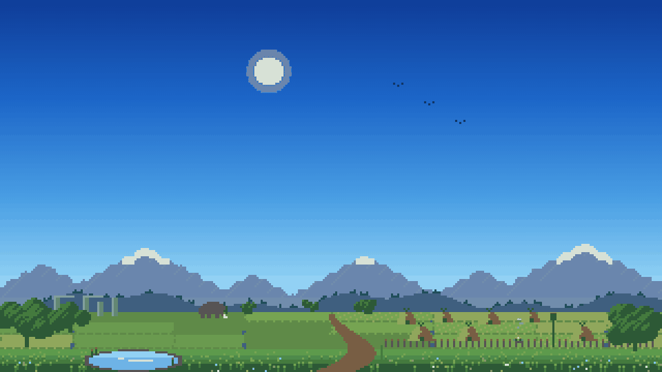
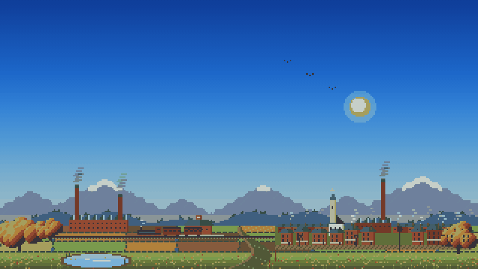
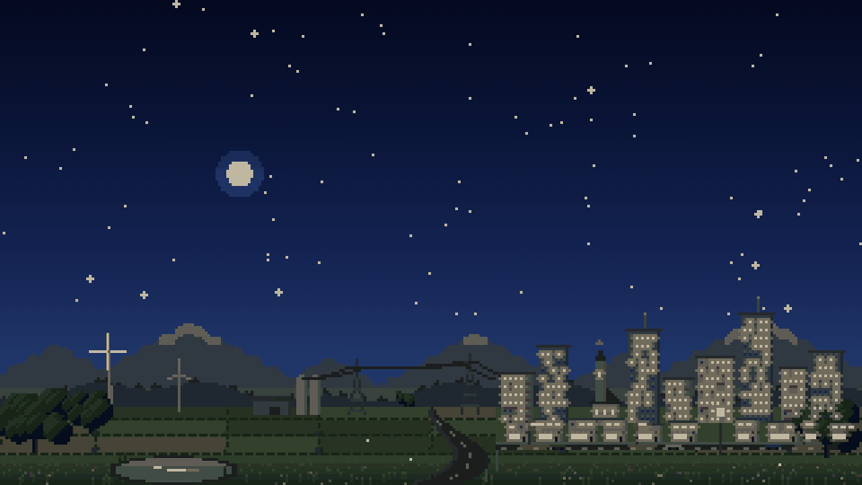
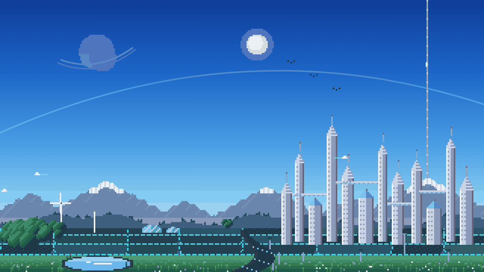
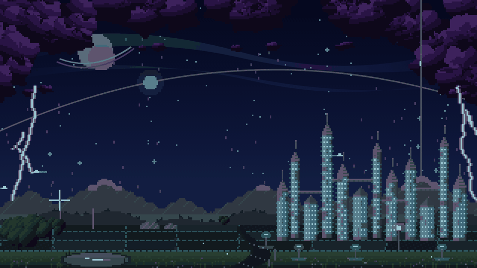
The world outside
The sky follows your local clock: dawn, day, dusk and a starry night, with the sun and moon crossing it. With a town set, dawn and dusk land on its real sunrise and sunset, and the moon shows its real phase.
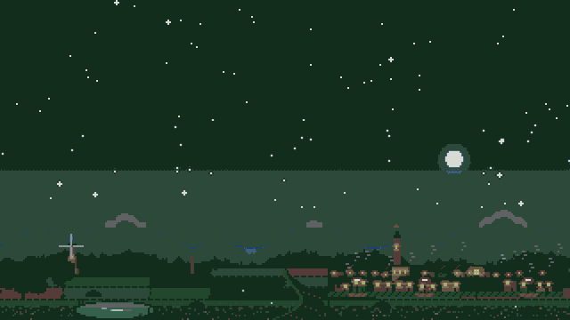
The land follows the seasons: blossom in spring, golden wheat in summer, orange trees in autumn, a muted winter, and snow on roofs and trees only when there really is snow. Set a town and the idle sky follows its weather: clear, a few clouds, overcast, rain, snow, fog or thunder. The town decorates itself for Halloween, December, New Year's Eve and the Fourth of July.
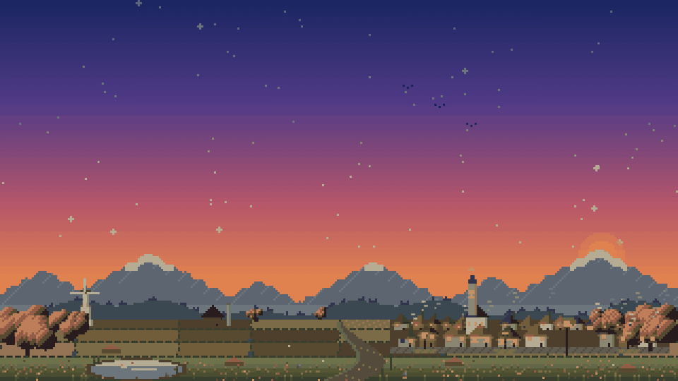
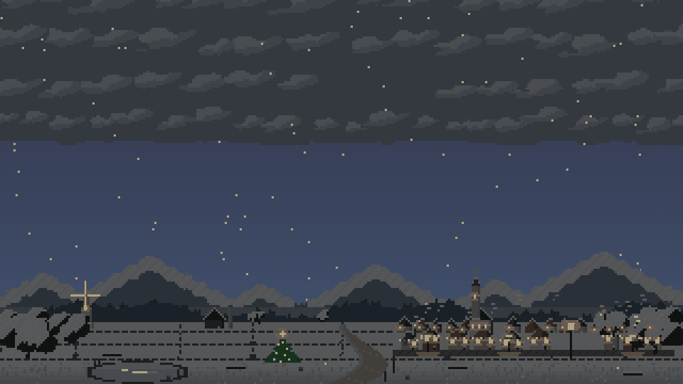
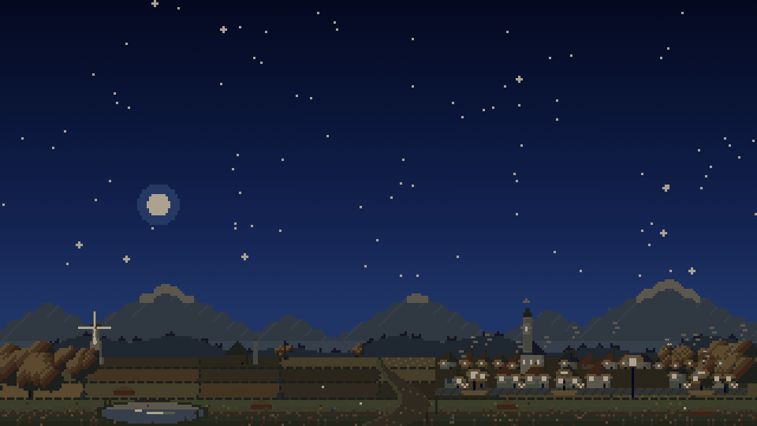
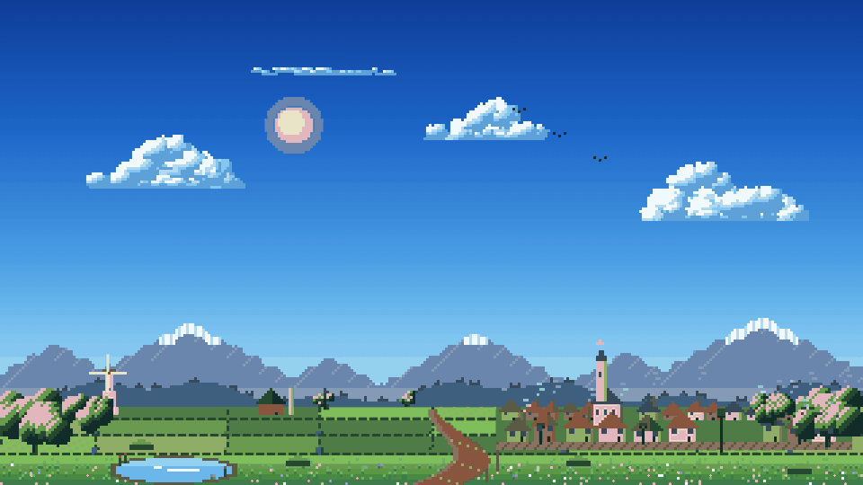
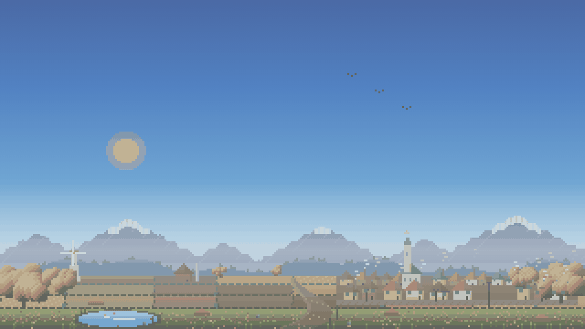
Commands
Everything is one command, /terrarium-weather, followed by what to change. On its own it says what the background shows; with a word it doesn't know, it lists the rest.
| Command | Does |
|---|---|
/terrarium-weather place <town> | Follow the real weather in a town (Town, Region picks between towns of one name); off stops. |
/terrarium-weather era <era> | Preview stone, village, industrial, modern or scifi; auto follows the context. Bare, it says where society stands. |
/terrarium-weather sky <sky> | Preview clear, partly, overcast, rain, snow, fog, thunder; auto. |
/terrarium-weather season <season> | Preview spring, summer, autumn, winter, snow; auto. |
/terrarium-weather holiday <name> | Preview halloween, christmas, newyear, july4; none or auto. |
/terrarium-weather time HH:MM | Show the sky at a time of day; auto follows the clock. |
/terrarium-weather reset | Clear every preview: sky, season, era, holiday and time follow the real ones again. |
/terrarium-weather cycle [seconds] | Play a whole day in under a minute. |
/terrarium-weather tour | A 40-second slideshow of seasons and skies. |
/terrarium-weather demo | Show the session events: kites, a firework, a red strike, fog. |
/terrarium-weather now | Say what the background shows and why. |
/terrarium-weather test | Fire a burst of test lightning. |
/terrarium-weather off | Clear the background for this session. |
Claude can use the same through three tools: weather_preview (sky, season, holiday, era, hour), weather_place and weather_cycle.
Settings
One setting, place: the town whose weather the sky follows. Empty by default, which sends nothing anywhere. Set it with /terrarium-weather place, or from a shell:
echo '{"place":"Tampa, Florida"}' | claude plugin configure thinking-weather@claude-terrarium --values-stdin
which stores it in ~/.claude/settings.json:
"pluginConfigs": {
"thinking-weather@claude-terrarium": { "options": { "place": "Tampa, Florida" } }
}
Where it draws
- The background and the storm-cloud working row draw in the desktop app. The terminal and editors draw no backgrounds, so there the mod does nothing visible.
- The live step row's spinning orb belongs to the app and stays.
- It makes no sound: mod audio does not play when Claude Code runs on Linux behind the desktop app.
How it is drawn
The desktop app strips embedded images from a background, so everything is vector pixel art on a 320x180 grid: one stroke-width-1 path per colour run, each colour reaching one cell under its lighter neighbours so no hairlines show at fractional window sizes. Every scene stays under the app's 131,072-character limit, and every animation steps on one shared half-second clock, so the background redraws at most twice a second.
Install
In the desktop app: click + next to the prompt box, then Plugins, Add marketplace with Guhan-SenSam/claude-terrarium, then Add plugin and pick thinking-weather.
At a terminal prompt:
/plugin install thinking-weather --marketplace Guhan-SenSam/claude-terrarium
From a shell:
claude plugin install thinking-weather --marketplace Guhan-SenSam/claude-terrarium
Choose the user scope to load it in every session. Update with claude plugin update thinking-weather@claude-terrarium, then restart or run /reload-plugins.